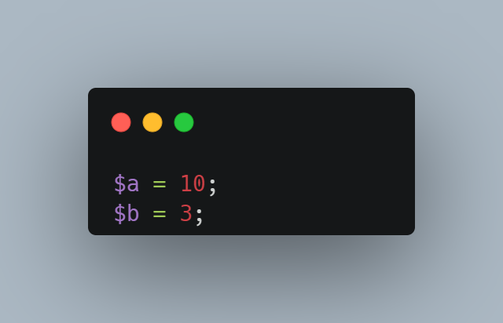

Operator aritmatika merupakan operator matematis yang terdiri dari operator
penambahan, pengurangan, perkalian, pembagian, modulus, dll. Di dalam PHP, operasi matematika yang
berlaku sangatlah mirip dengan operator milik Java. Perbedaan yang terlihat hanya pada bagian syntaxnya.
Page 34
Contoh variabel
Di dalam halaman ini, kita bisa memberi contoh untuk pengoperasian matematika dengan
memberi contoh nilai pada variabel a dan b.

Operator "+"
Hasil dari kode diatas ini adalah 13, maka fungsi dari operasi “+” adalah
untuk menjumlahkan variabel a dan b
Operator "-"
Hasil dari kode diatas ini adalah 7, maka fungsi dari operasi “-” adalah untuk
mengurangi variabel a dan b
Operator "*"
Hasil dari kode diatas ini adalah 30, maka fungsi dari operasi “*” adalah
untuk mengalikan variabel a dan b
Operator "/"
Hasil dari kode diatas ini adalah 3.333..., maka fungsi dari operasi “/”
adalah untuk membagi variabel a dan b
Operator "%"
Hasil dari kode diatas ini adalah 1, maka fungsi dari operasi “%” adalah untuk
mencari modulus pada variabel a dan b
Operator "**"
Hasil dari kode diatas ini adalah 1000, maka fungsi dari operasi “**” adalah
untuk memangkatkan variabel a dan b
Operator "-"
Hasil dari kode diatas ini adalah -10, maka fungsi dari operasi “-” juga bisa
untuk memberi nilai negatif pada variabel a
Page 35
Similar Assignment
Selain operasi matematika, terdapat juga operator penugasan. Operator penugasan (=)
berfungsi untuk memberi nilai pada suatu variabel. Pada PHP, gabungan operator penugasan dengan operator
matematika terdiri dari :
Operator "+="
Perintah (+=) merupakan perintah yang sama seperti $a = $a + 14. Nilai $a
ditambahkan secara otomatis dengan 14 dan hasilnya dimasukkan ke $a.
Operator "-="
Melanjutkan nilai variabel yang sebelumnya, perintah (-=) merupakan perintah
yang sama seperti $a = $a - 2. Nilai $a dikurangi secara otomatis dengan 2 dan hasilnya
dimasukkan ke $a.
Operator "*="
Melanjutkan nilai variabel yang sebelumnya, Perintah (*=) merupakan perintah
yang sama seperti $a = $a * 4. Nilai $a dikalikan secara otomatis dengan 4 dan hasilnya
dimasukkan ke $a.
Page 36
Careful about Flexible Syntax
Dalam PHP, terdapat beberapa hal yang harus kita perhatikan, terutama dalam
mendeklarasikan sebuah variabel, seperti:
Dalam kode diatas, tidak ada error yang terjadi. Namun, perlu kita
perhatikan lebih detail lagi karena dalam PHP, semua kode bersifat fleksibel yang mengakibatkan hal
seperti tipe data pun bisa berakibat 'melenceng'. Misal, dalam kode diatas, nilai $a = '1' merupakan
variabel dengan tipe data string karena diberi tanda petik satu. Lalu untuk nilai $b = 2 merupakan
variabel dengan tipe data integer. Tetapi, saat kita mencoba untuk menjumlahkannya, nilai yang keluar
merupakan nilai yang benar dan tidak terjadi error apapun. Hal ini bukan merupakan sesuatu yang fatal
jika kode yang ditulis tidaklah banyak, tetapi jika kode yang kita buat sudah masuk ke tahap yang lebih
kompleks, tentu hal ini akan mempengaruhi kode yang akan kita buat kedepannya.